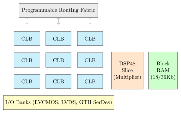
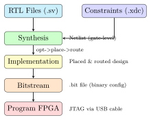

Chapter 6: FPGA Prototyping¶
FPGA prototyping is the critical halfway point between writing RTL on your laptop and shipping silicon to a foundry. You program your design onto a real FPGA board, verify it works in hardware at speed, and fix any bugs before committing millions of dollars to manufacture.
6.1 How an FPGA Works Internally¶
An FPGA chip is a sea of programmable resources:

- CLB (Configurable Logic Block)
- Contains 4–8 Look-Up Tables (LUTs) and flip-flops. A 6-input LUT can implement any Boolean function of 6 variables. After synthesis, your HDL logic is mapped onto these LUTs.
- BRAM (Block RAM)
- Hard-macro memory blocks (18 Kb or 36 Kb each). Used for FIFOs, instruction memory, coefficient tables. Much more efficient than building memories from LUTs.
- DSP48/DSP58 Slice
- Dedicated 18\(\times\)18 multiplier+accumulator. The FIR filter maps each tap’s multiply-add onto one DSP slice.
- I/O Banks
- Configurable I/O pins supporting LVCMOS, LVDS differential, DDR4 memory interface (via SERDES), and high-speed serial (PCIe, GTH).
- PLL/MMCM
- Clock management tiles — generate phase-locked, divided, or multiplied clocks from the board oscillator.
6.2 The Xilinx Vivado Flow¶
Vivado is Xilinx’s primary EDA suite for Artix-7, Kintex UltraScale+, and Zynq devices. The project uses a non-project (scripted) mode — entirely driven by Tcl scripts, which is reproducible and version-control friendly.
6.2.1 Build Flow Overview¶

6.2.2 Running the Arty A7 Build¶
# Build bitstream (takes 5-20 minutes depending on design size)
vivado -mode batch \
-source fpga/xilinx-artix7/build_arty_a7.tcl \
-tclargs top 4 # top module name, 4 parallel jobs
# Output:
# fpga/xilinx-artix7/output/top.bit
# fpga/xilinx-artix7/output/top_timing.rpt (timing report)
# fpga/xilinx-artix7/output/top_util.rpt (resource usage)
# Program the FPGA (board must be connected via USB-JTAG)
vivado -mode batch \
-source fpga/xilinx-artix7/program_arty.tcl \
-tclargs fpga/xilinx-artix7/output/top.bit
6.2.3 Reading Timing Reports¶
After synthesis, always check the timing report. A negative Worst Negative Slack (WNS) means timing is violated — the design will malfunction at the target clock frequency:
# From top_timing.rpt:
# Design Timing Summary
# ---------------------
# WNS (ns) TNS (ns) TNS Failing Endpoints
# 2.134 0.000 0 <- PASS: WNS positive
#
# If failing:
# WNS (ns) TNS (ns) TNS Failing Endpoints
# -0.512 -12.340 47 <- FAIL: must fix
What to Do When Timing Fails
-
Reduce clock frequency: In the XDC file, change the clock period from 10 ns (100 MHz) to 12 ns (83 MHz).
-
Pipeline the critical path: Add a register stage to break long logic chains into shorter ones.
-
Try aggressive optimisation: Use
-directive AggressiveExplorein place/route commands. -
Restructure the logic: Reduce logic depth between flip-flops.
6.3 Constraint Files (XDC)¶
A constraint file (.xdc) tells Vivado three things:
-
Which physical pin carries which port signal.
-
What the clock frequency is.
-
Any exceptions to the timing rules (false paths, multicycle paths).
6.3.1 Clock Constraint¶
# Tell Vivado: the signal sys_clk comes in on pin E3, at 100 MHz
set_property -dict { PACKAGE_PIN E3 IOSTANDARD LVCMOS33 } \
[get_ports { sys_clk }]
create_clock -add -name sys_clk_pin \
-period 10.00 \ # 10 ns = 100 MHz
-waveform {0 5} \ # rises at 0 ns, falls at 5 ns
[get_ports { sys_clk }]
6.3.2 I/O Pin Constraint¶
# LEDs (4 green LEDs on the board)
set_property -dict { PACKAGE_PIN H5 IOSTANDARD LVCMOS33 } [get_ports { led[0] }]
set_property -dict { PACKAGE_PIN J5 IOSTANDARD LVCMOS33 } [get_ports { led[1] }]
set_property -dict { PACKAGE_PIN T9 IOSTANDARD LVCMOS33 } [get_ports { led[2] }]
set_property -dict { PACKAGE_PIN T10 IOSTANDARD LVCMOS33 } [get_ports { led[3] }]
# UART (connects to on-board FT2232HQ USB-UART bridge)
set_property -dict { PACKAGE_PIN D10 IOSTANDARD LVCMOS33 } [get_ports { uart_txd }]
set_property -dict { PACKAGE_PIN A9 IOSTANDARD LVCMOS33 } [get_ports { uart_rxd }]
Package pin names (like E3, H5) come from the board’s schematic and the FPGA’s pinout diagram. The complete files for all boards are in fpga/constraints/.
6.4 Resource Utilisation — What Fits Where¶
After synthesis, check the utilisation report to understand how much of the FPGA is used:
| Resource | Used | Available | % | Notes |
|---|---|---|---|---|
| LUT | 3,124 | 20,800 | 15.0% | OK |
| Flip-Flops | 2,012 | 41,600 | 4.8% | OK |
| BRAM (18K) | 8 | 50 | 16.0% | OK |
| DSP48 | 0 | 90 | 0% | No multipliers used |
| I/O | 12 | 210 | 5.7% | OK |
Utilisation Guidelines
-
Stay below 70% LUT utilisation to allow Vivado’s router room to manoeuvre. Above 80% causes dramatically longer build times and timing failures.
-
BRAM and DSP can safely use up to 90% since they don’t affect routing congestion.
-
If your design uses \(>\)70% LUTs on an Arty A7-35T, consider moving to the A7-100T (same board, larger chip).
6.5 Intel Quartus Flow (DE10-Nano)¶
The DE10-Nano uses an Intel Cyclone V SoC FPGA. The tool is Quartus Prime. The project provides fpga/intel-altera/de10_nano_quartus.tcl:
# Build from command line:
quartus_sh --script fpga/intel-altera/de10_nano_quartus.tcl
# Program via JTAG:
quartus_pgm -m jtag \
-o "p;fpga/intel-altera/output/de10_nano_top.sof"
Key differences from Vivado:
-
Timing constraints use SDC files (
de10_nano.sdc). -
Resource primitives are called ALMs (Adaptive Logic Modules) instead of LUTs.
-
The HPS (Hard Processor System) on the Cyclone V SoC can run Linux and talk to the FPGA fabric via a lightweight AXI bus.
6.6 ILA — In-Circuit Debugging¶
When a bug only appears on real hardware (not in simulation), you need Integrated Logic Analyser (ILA) — a logic analyser baked into your FPGA design:
source fpga/ip-cores/clk_wizard_config.tcl
# Create ILA with 4 probes, 1024 sample depth
create_ila ila_debug 4 1024
(* mark_debug = "true" *) logic uart_txd;
(* mark_debug = "true" *) logic [7:0] tx_data;
(* mark_debug = "true" *) logic tx_valid;
The ( mark_debug ) attribute tells Vivado to route these signals to the ILA probe inputs. After programming the FPGA:
# 1. Open Hardware Manager in Vivado GUI
# 2. Program device with both .bit and .ltx files:
vivado -mode batch \
-source fpga/xilinx-ultrascale-plus/program_kcu.tcl \
-tclargs output/top.bit output/top.ltx
# 3. In Vivado Hardware Manager:
# - Set trigger: uart_txd = 0 (start bit falling edge)
# - Arm the trigger
# - Send data from terminal
# - View captured waveform
6.7 FPGA-in-the-Loop Testing¶
After programming the FPGA, the script verification/fpga-proto/
fpga_in_the_loop.py exercises the hardware from a Python test script running on your laptop:
from verification.fpga_proto.fpga_in_the_loop import FPGAInterface, UARTLoopbackTest
# Connect to FPGA via UART
fpga = FPGAInterface(port='/dev/ttyUSB0', baud=115200)
fpga.connect()
# Run UART register walk and loopback test
test = UARTLoopbackTest(fpga, uart_base=0x40000000)
fails = test.run_all()
# Output:
# PASS: [Scratch] addr=0x001C got=0xDEADBEEF exp=0xDEADBEEF
# PASS: [LSR.DR set] addr=0x0014 got=0x00000001 exp=0x00000001
# Result: PASS (0 failures)
6.8 Summary¶
-
FPGAs are reconfigurable chips made of LUTs, flip-flops, BRAM, and DSP slices connected by programmable routing.
-
The Vivado/Quartus flow takes RTL -> synthesis -> place & route -> bitstream -> JTAG programming.
-
Constraint files (.xdc) define pin assignments and clock frequencies.
-
WNS \(\geq\) 0 means timing passes; negative WNS means the design will malfunction at that clock frequency.
-
ILA cores allow capturing internal signals on real hardware without oscilloscopes.
-
FPGA-in-the-loop scripts automate hardware testing from Python.